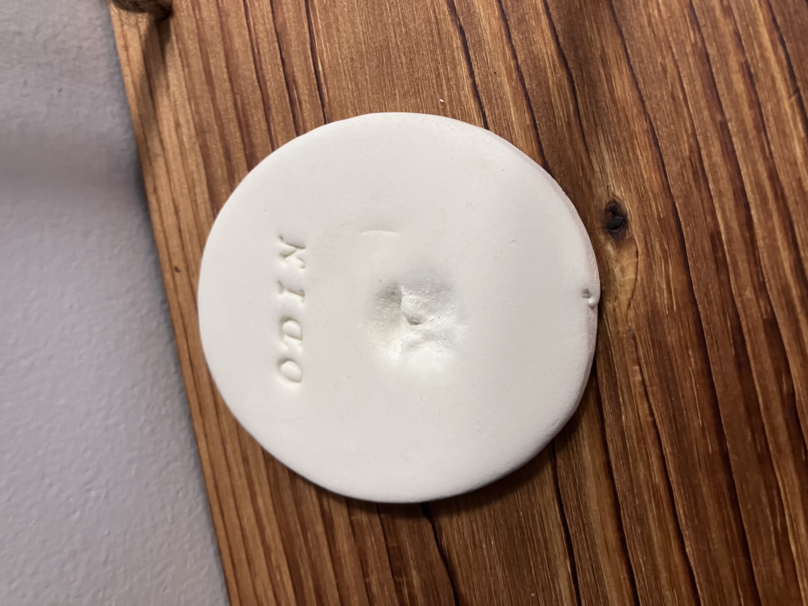
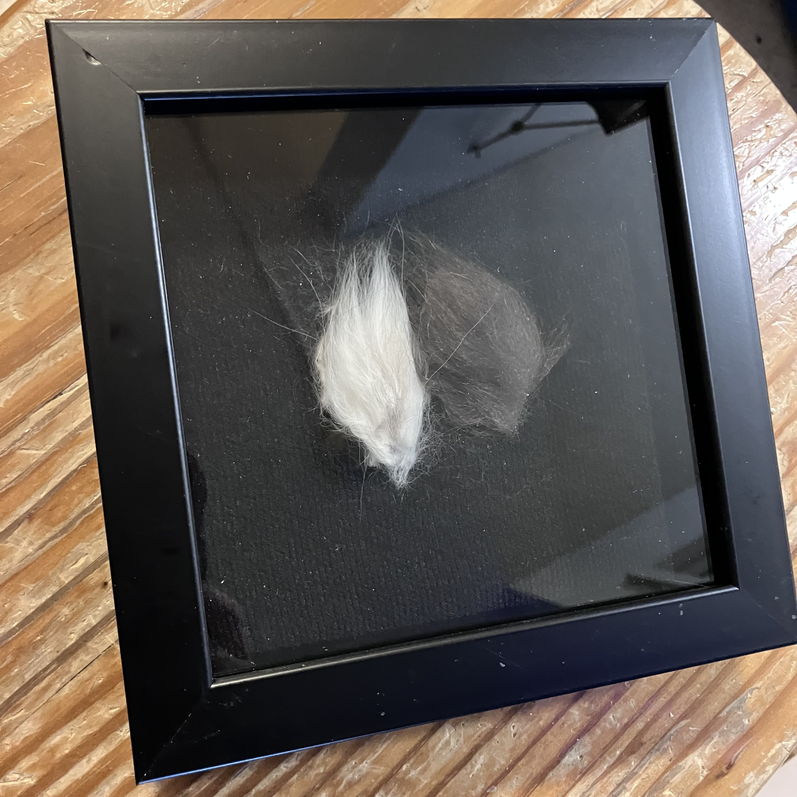

Odin Relics
Some of the smallest objects carry the deepest memories. These pieces belonged to Odin's life, and remain part of his story.
The Nose Print

A small impression of something unmistakably his. Odin's nose print preserves one of the tiny physical details that made him who he was — a quiet reminder that even the smallest marks can hold an entire life.
The Fur Clipping

A small clipping of Fraggle's fur, preserved as a physical reminder of the little grey cat at the heart of the Archives.
Sacred Bone Fragments

A memorial artifact preserved with care and reverence.
Some things are kept because they are historically important. Others are kept because someone mattered.